A — 01
Encuentra
tu equipo
Mezcla talentos, perspectivas y maneras de pensar. Las buenas ideas no vienen de una sola disciplina.
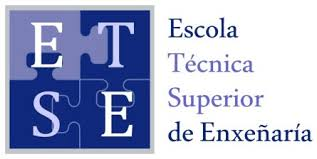
HACKATHON ETSEUSC EMPRENDE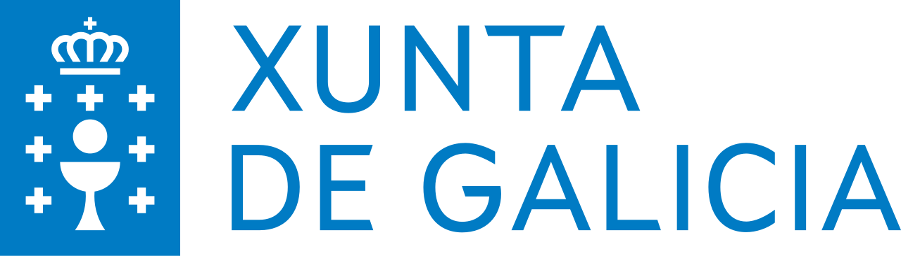
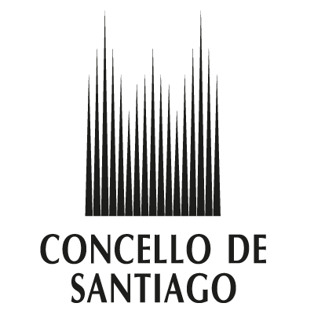
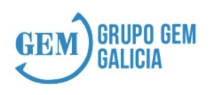
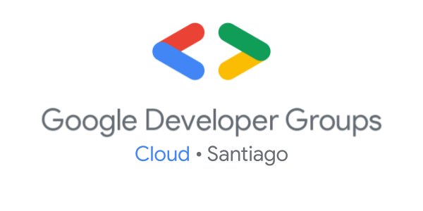
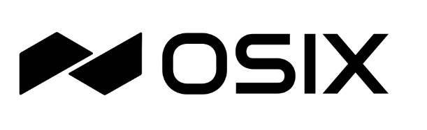
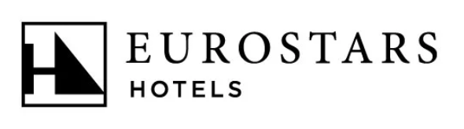
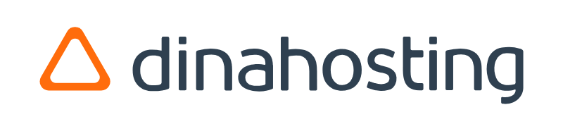
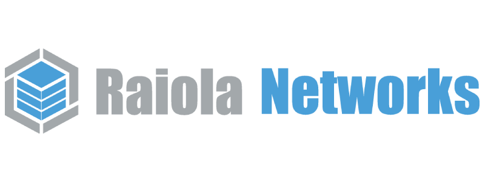
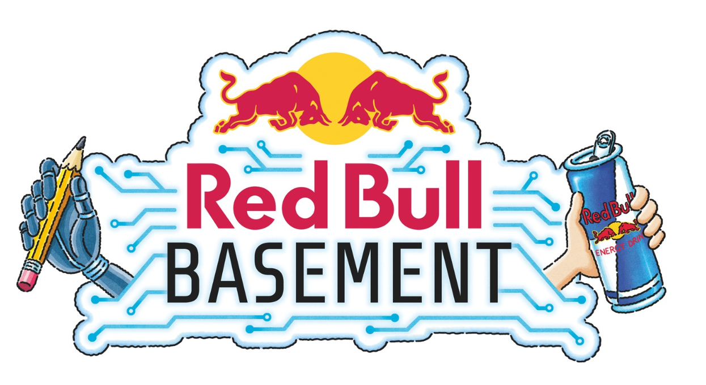
El viernes llegas con una idea. El domingo, la presentas hecha realidad. Dos días para probar, equivocarte y construirla con tu equipo.
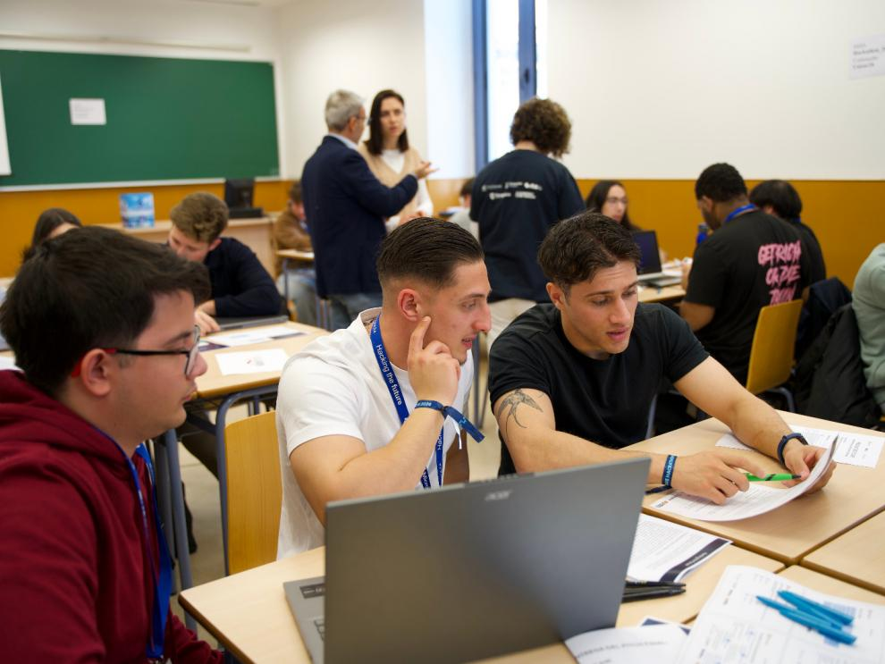
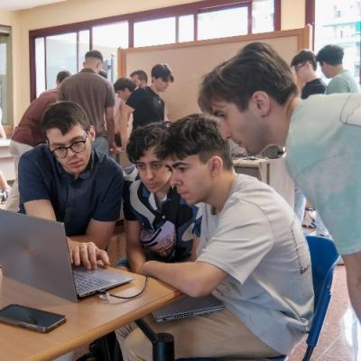
Un encuentro para imaginar, colaborar y convertir ideas en proyectos. Hackathon ETSE dentro del programa USC Emprende.
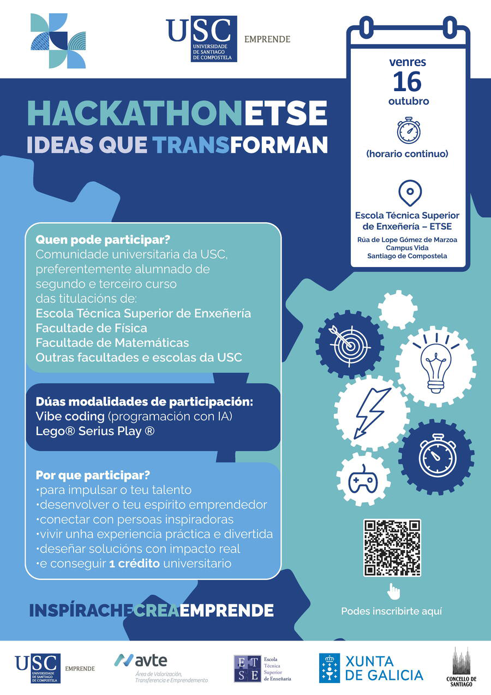
ABRIR CARTEL COMPLETO ↗Hace falta tener curiosidad. Durante un fin de semana, equipos multidisciplinares exploran un reto, prueban ideas y presentan lo que han aprendido.
Así se vive una hackathon ↗Mezcla talentos, perspectivas y maneras de pensar. Las buenas ideas no vienen de una sola disciplina.
Diseña, programa, prueba. Un prototipo imperfecto enseña más que una idea esperando el momento perfecto.
Cuenta qué problema elegiste, qué creaste y qué harías después. Compartir también es parte del proceso.
La escuela y la USC cuentan con encuentros de innovación y emprendimiento que reúnen talento, tecnología y retos sociales.
Jornada de 12:00 a 20:00 sobre sostenibilidad e innovación, con Vibe Coding y LEGO® Serious Play. La organizó la AVTE dentro de USC Emprende, con financiación de la Xunta de Galicia y el Concello de Santiago.
Crónica del encuentro ↗36 horas para llevar retos sociales y ambientales a un prototipo. La organización publicó un resumen de 140 participantes y cuatro retos.
Ver retos y resultados ↗Entidades que han colaborado en iniciativas anteriores de innovación y emprendimiento de la ETSE y la USC.
Conoce más sobre Hackathon ETSE 2025 e Impacthon USC 2026.
La hackathon combina creatividad, tecnología y trabajo en equipo para abordar desafíos con impacto.
¿Cómo podríamos mejorar la vida cotidiana en la universidad con tecnología accesible?
Transforma datos abiertos en una herramienta que ayude a tomar mejores decisiones.
Imagina formas de hacer que la tecnología contribuya a un futuro más sostenible.
Viernes 16 a las 14:00 — domingo 18 a las 14:00. La zona de trabajo permanece abierta las 24 horas durante el evento.
Acreditación, presentación del espacio y formación de equipos.
Elegid un problema y definid para quién queréis resolverlo.
Prototipo, primeras decisiones y primer commit.
Una mirada externa para resolver bloqueos y enfocar el proyecto.
Revisad alcance, reparto de tareas y lo que falta para la demo.
Últimos ajustes y preparación de la presentación.
Mostrad el problema, lo que habéis construido y qué haríais después.
48 horas después, termina el sprint.
Durante 48 horas, los equipos trabajan en una propuesta, desarrollan un prototipo y preparan una presentación para compartir sus resultados.
Consulta la agenda ↗Consulta el cartel para conocer los detalles de participación y el programa de la jornada.
Ver información del evento ↗